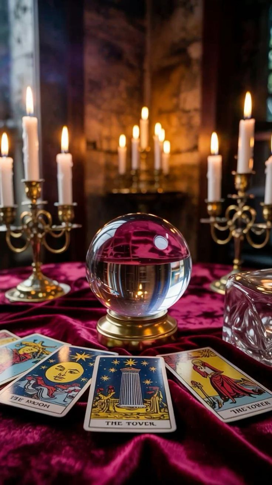

Bienvenidos a Caos como medicina
Bienvenida al blog de tarot. Aquí vas a encontrar lecturas intuitivas, reflexiones sobre los arquetipos y la energía del momento. Este espacio busca conectar con lo simbólico y espiritual.
Mi enfoque es introspectivo y práctico. Uso el tarot como una herramienta para guiar, no para adivinar. Conectá con tu intuición y explorá los mensajes que el universo tiene para vos.

Explorá nuestros artículos, tiradas y reflexiones para tu crecimiento personal.